Сучасныя Клясціцы
2006
г. Аграгарадок Клясціцы. Сучаснае развіццё.
Вёска
атрымала статус аграгарадка.
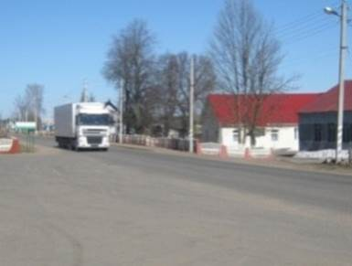
24 снежня 2010 г. :
СВК
“Клясціцы” рэарганізаваны ў ААТ “Клясціцы”
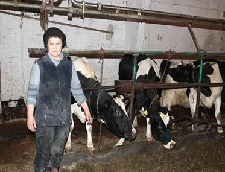
2011
г. :
Пачата
будаўніцтва малочна-таварнага комплексу плошчай 10,4
га.
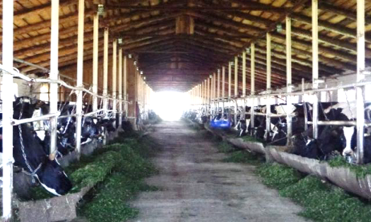
19
ліпеня 2012 г. :
У
школьным музеі адбылося адкрыццё
новай залы прысвечанай падзеям Вялікай Айчыннай
вайны.
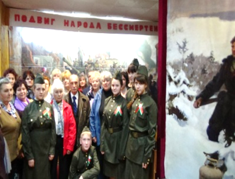
6
жніўня 2012 г. :
У
аграгарадку арганізавана сумеснае латышска-беларускае прадпрыемства “ЛМФ Плюс”, якое займаецца дрэваапрацоўкай.
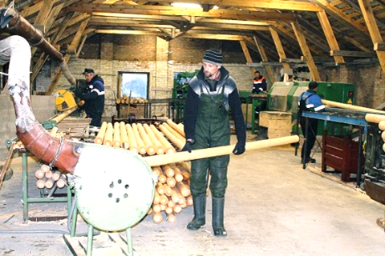
19
верасня 2013 г.
:
Адкрыта
месца знаходжанне фундамента разбуранага ў 1939 г.манумента. На месцы
ўстаноўлены памятны знак.
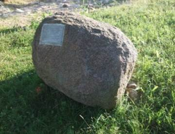
2014
г. :
Зарэгістравана рэлігійная абшчына “Прыход храма Святых
апосталаў Пятра і Паўла” .
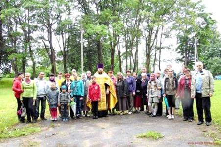
2015
г. :
Полацкія
браты-краязнаўцы Андрэй і Аляксей Бухавецкія знайшлі закладную пласціну, два
ядры, крыж у фундаменце разбуранага помніка.
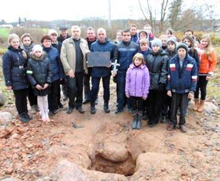
2016
г.
:
Браты-краязнаўцы Бухавецкія выдалі брашуру “Тайна
Клясціцкага
манумента”.
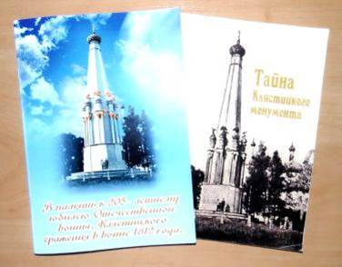
2017
г.
:
На
беразе ракі Нішча ўстаноўлены памятны знак намесцы помніка грэнадзёрам Другога батальёна
Паўлаўскага
палка.
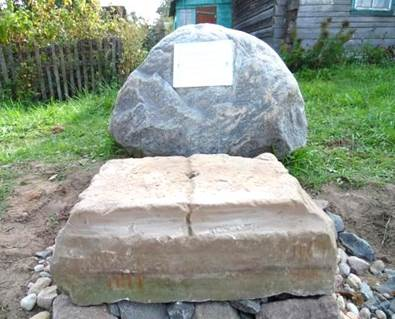
2017
г.
:
На
сцяне школы змешчана
мемарыяльная таблічка ў
гонар героя Айчыннай вайны 1812 г. генерал-лейтэнанта Пятра Хрысціянавіча
Вітгенштэйна.
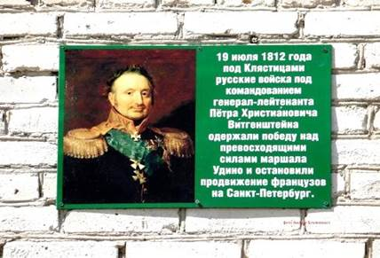
01.01.2018
г.
:
Насельніцтва
складае 1324
чалавекі, на тэрыторыі сельсавета 20
населеных
пунктаў, 666 уласных гаспадарак. На тэрыторыі Клясціцкага сельскага савета
дзейнічаюць прадпрыемствы
сельскай гаспадаркі , па вытворчасці будаўнічых матэрыялаў і піламатэрыялаў.
Існуе сярэдняя школа-сад, філіял
школы мастацтваў і Дома рамёстваў, клубная установа,
бібліятэка. У сістэме аховы здароўя
дзейнічае ўрачэбныя
амбулаторыя і аптэка. Для заняткаў фізкультурай і спортам ёсць стадыён і спартыўная зала. Турысцская інфраструктура прадстаўлена
ландшафтным заказнікам
“Чырвоны Бор”.
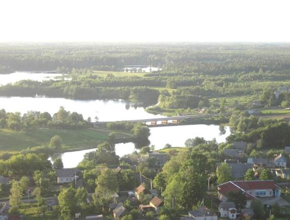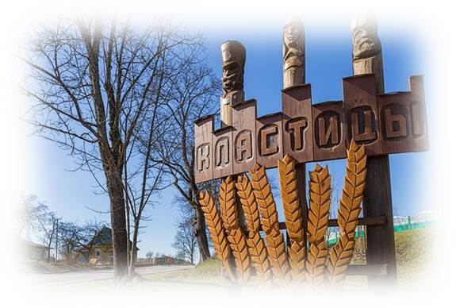